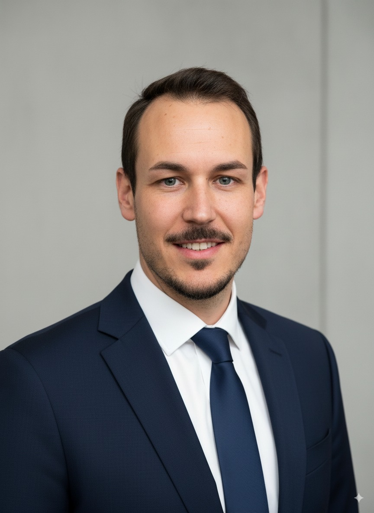

13+ Jahre IT-Führungserfahrung. Jetzt an der Schnittstelle zwischen bewährter Unternehmens-IT und konkreter KI-Transformation — mit dem Ziel, Organisationen zukunftsfähig zu machen.

Offen für neue Möglichkeiten — AI Transformation Leader · CAIO · Senior IT Director — Remote-first, DACH-Raum
Ich bin Patrik — IT-Führungskraft und AI-Stratege aus Dornbirn, Vorarlberg. Mit über 13 Jahren Erfahrung in der Unternehmens-IT, zuletzt als stellvertretender IT-Leiter bei Pantec Engineering AG (150+ User, 4 internationale Standorte), habe ich gelernt: Technologie entfaltet ihren Wert erst, wenn sie im Alltag der Menschen ankommt.
PLAI.AT ist mein persönliches AI-Labor: Hier teste ich Tools, entwickle Prototypen und dokumentiere, was in der Praxis wirklich funktioniert — und was nicht.
Ich glaube daran, dass KI dann ihren größten Wert entfaltet, wenn sie Menschen ermächtigt — nicht ersetzt. Mein Ansatz ist stets konkret: Was kann ich heute, in meinem spezifischen Kontext, nachweislich besser machen?
Zeit ist das Einzige, das wir nicht zurückbekommen. KI gibt mir einen Teil davon zurück — und das ist der ehrlichste Grund, warum ich dieses Thema so ernst nehme.
Mit PLAI.AT als persönlichem AI-Labor lebe ich diese Philosophie täglich — in Experimenten, Workshops und konkreten Projekten. Meine eigene Arbeitsweise ist das lebendige Beispiel für das, was ich lehre.
Bereit für den nächsten Schritt
Offen für AI Leadership Rollen, strategische Kooperationen und spannende Projekte im DACH-Raum.